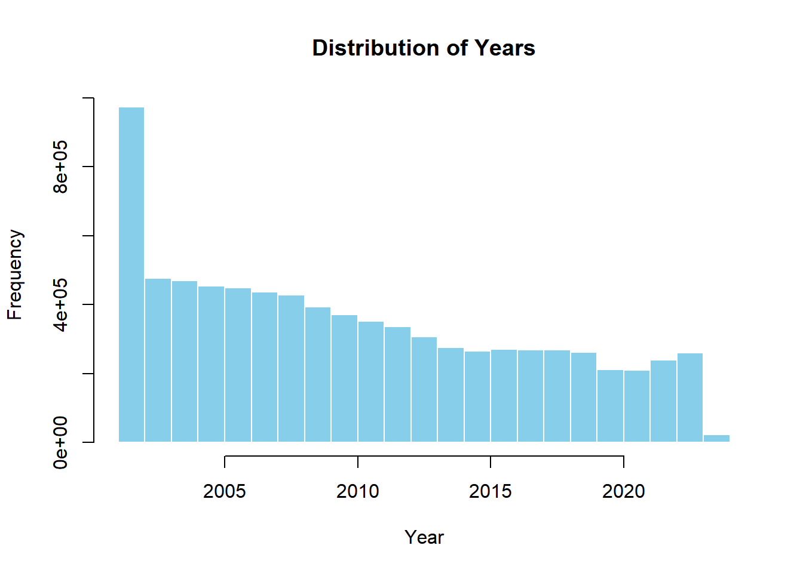
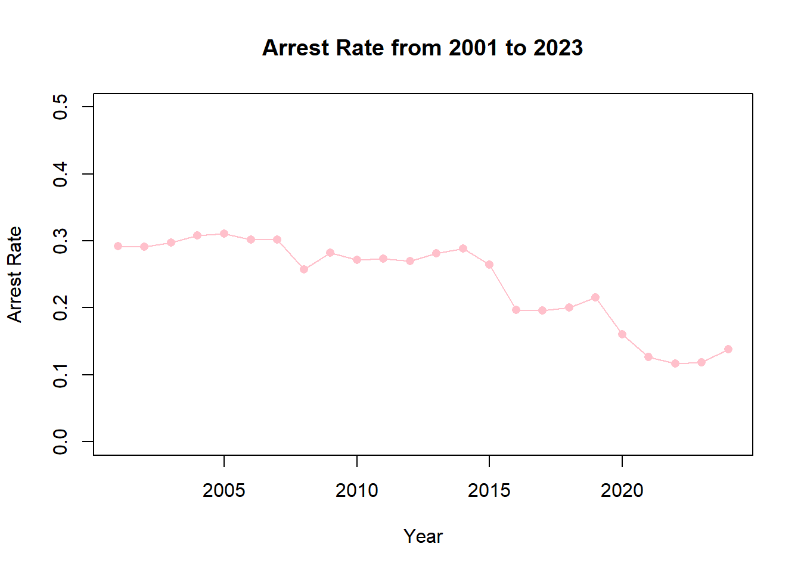
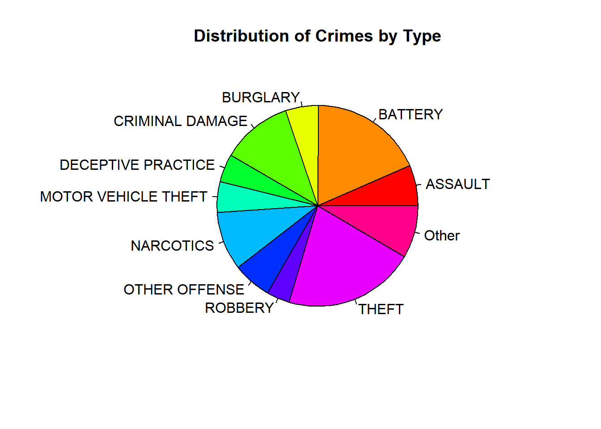
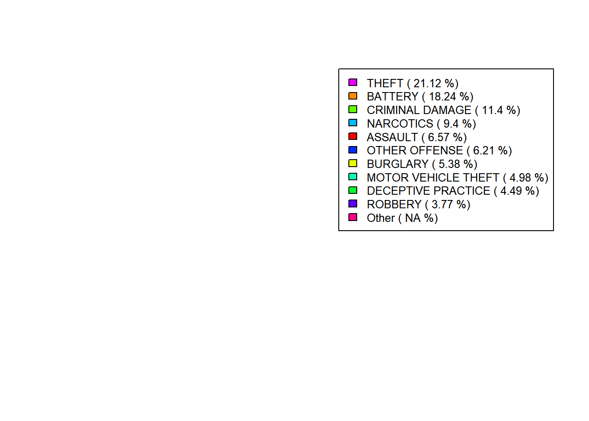
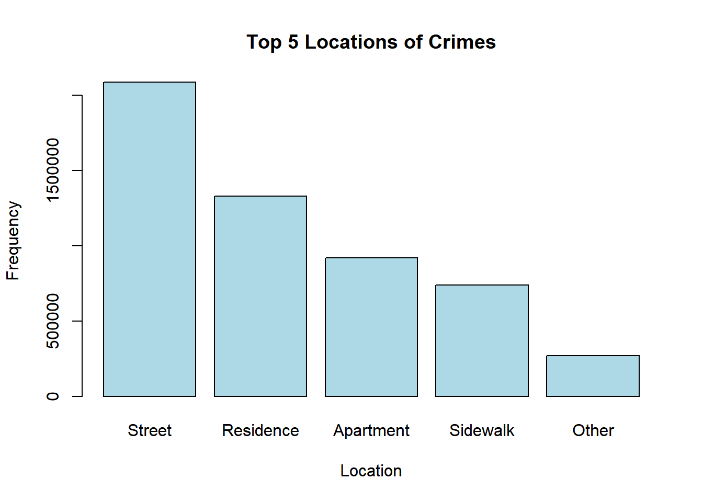
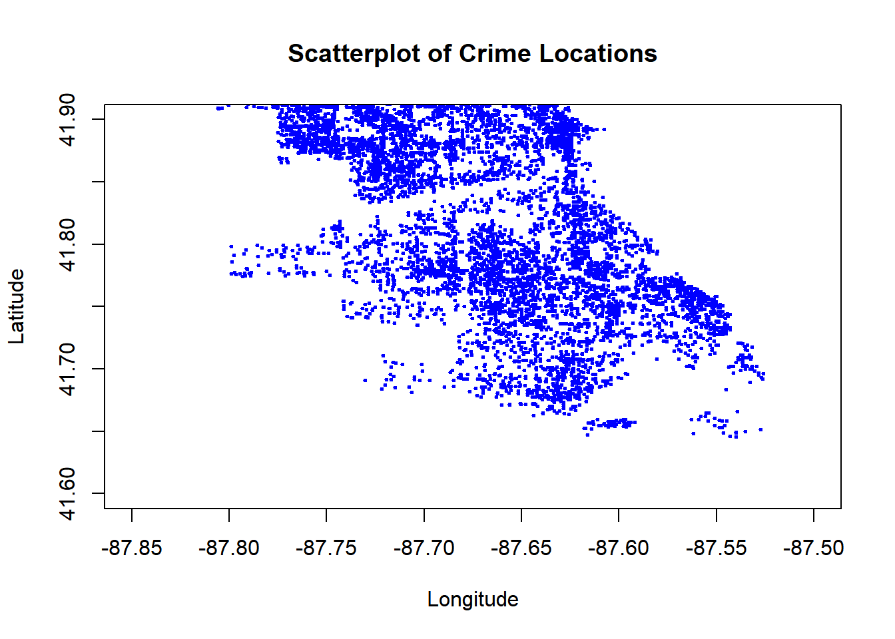
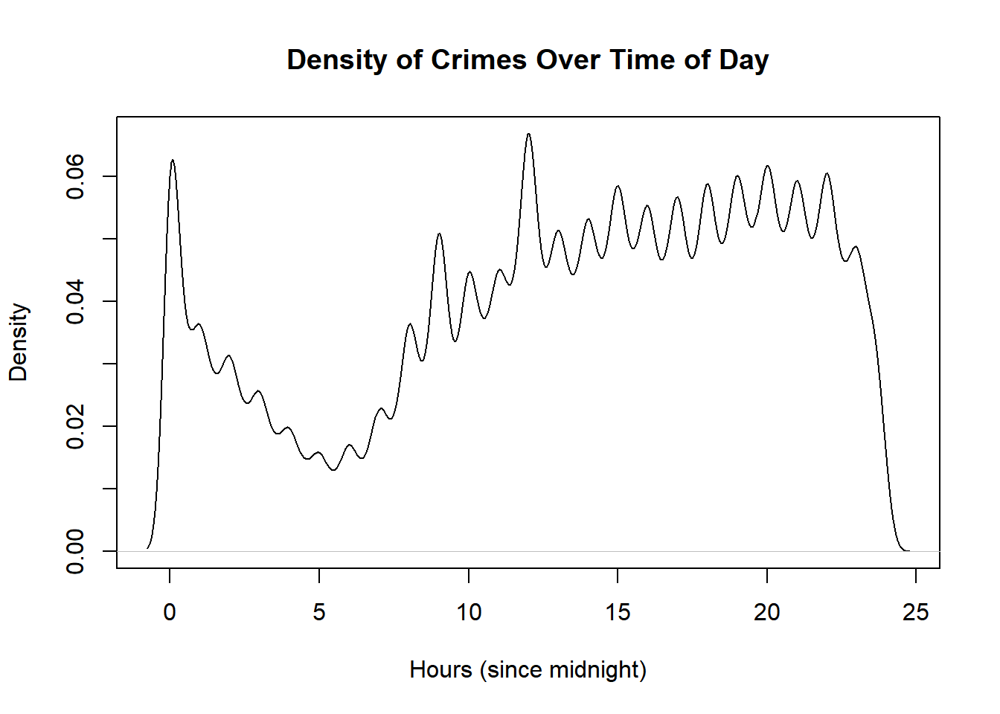
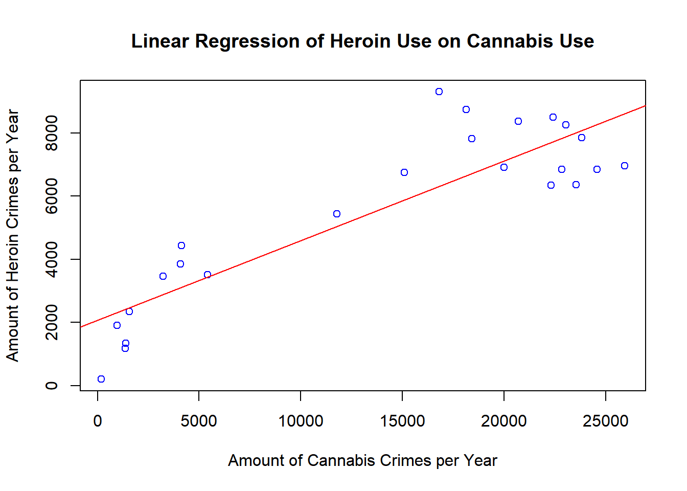

library(readr)Warning: package 'readr' was built under R version 4.2.2crimes_data <- read_csv("C:/Users/jared/Downloads/Crimes_-_2001_to_Present.csv", show_col_types = FALSE)07 - 405 - Crimes in Chicago
Benjamin Mao, Cecilia Xin, Monica Liu, Jared Boyd
Our goal for this project is to find patterns in crime in Chicago. Our dataset is sourced from the Chicago Police Department’s CLEAR system, comprising reported incidents of crime in the City of Chicago from 2001 to the present, with addresses anonymized at the block level for victim privacy. This data includes the date, time, type, and general location of crime in Chicago.
library(readr)Warning: package 'readr' was built under R version 4.2.2crimes_data <- read_csv("C:/Users/jared/Downloads/Crimes_-_2001_to_Present.csv", show_col_types = FALSE)With this plot we will analyze the number of crimes in different years. The graph shows that the number of crimes has been decreasing over time.
hist(crimes_data$Year, main = "Distribution of Years", xlab = "Year",
ylab = "Frequency", col = "skyblue", border = "white")
With this plot we will analyze arrest rate over time. The graph shows that the arrest rate has been decreasing over time. It starts around 0.3 and slowly decreases to around 0.1 from 2001 to 2023
# Plot the year on the x-axis and the arrest rate (calculated per year) on the y-axis to see if arrest rates are increasing or decreasing over time. In the Arrest column, True means an arrest was made, and False means no arrest was made.
# install.packages("dplyr")
library(dplyr)Warning: package 'dplyr' was built under R version 4.2.3
Attaching package: 'dplyr'The following objects are masked from 'package:stats':
filter, lagThe following objects are masked from 'package:base':
intersect, setdiff, setequal, unionarrests_by_year <- crimes_data %>%
group_by(Year) %>%
summarise(Arrest_Rate = sum(Arrest == "TRUE") / n())
# arrests_by_year# curve
plot(arrests_by_year$Year, arrests_by_year$Arrest_Rate,
type = "o",
xlab = "Year", ylab = "Arrest Rate",
main = "Arrest Rate from 2001 to 2023",
col = "pink", pch = 16, ylim = c(0, 0.5))
With this plot we will analyze the frequency of the different crime types. The graph shows that theft is the most common crime type, followed by battery and criminal damage. We have ordered the legend in decreasing amounts to make a clear view of the most common to least common crimes.
crime_type <- table(crimes_data$`Primary Type`)
total_crimes <- sum(crime_type)
crime_type_percent <- prop.table(crime_type) * 100
# sort types with frequencies below 3% into "Other"category
other_crime_types <- names(crime_type_percent)[crime_type_percent < 3]
crime_type["Other"] <- sum(crime_type[other_crime_types])
crime_type <- crime_type[!(names(crime_type) %in% other_crime_types)]
# plot Primary Type pie chart
pie(crime_type, main = "Distribution of Crimes by Type", col = rainbow(length(crime_type)))
# Also plot the percentage in another graph
par(xpd = TRUE)
plot.new()
order = order(crime_type_percent[names(crime_type)], decreasing = TRUE)
round_desc_perc = round((crime_type_percent[names(crime_type)])[order], 2)
ordered_names = names(crime_type)[order]
ordered_colors = rainbow(length(crime_type))[order]
legend("topright", legend = paste(ordered_names, "(",
round_desc_perc, "%)"), cex = 0.8, fill = ordered_colors)
With this plot we will analyze the location of the crimes. The graph shows that most crimes occur in the street, followed by residences and apartments.
# Plot the location of the crimes using a barplot
table = table(crimes_data$`Location Description`)
ordered = table[order(table, decreasing = TRUE)][1:5]
# Make the x-axis labels more readable
names(ordered) = c("Street", "Residence", "Apartment", "Sidewalk", "Other")
# Plot bar plot
barplot(ordered, main = "Top 5 Locations of Crimes", xlab = "Location", ylab = "Frequency", col = "lightblue")
With this plot we will analyze the relationship between the latitude and longitude of the crimes. The graph shows that most crimes occur in the city center, with a few outliers in the suburbs. Future improvement: use ggplot to create a more detailed and visually appealing scatterplot.
# Print a scatterplot of lattitude versus longitude. This could reveal if certain areas of the city are more prone to crime.
sampled_crimes <- crimes_data[sample(1:nrow(crimes_data), 10000), ]
plot(sampled_crimes$Longitude, sampled_crimes$Latitude,
xlab = "Longitude", ylab = "Latitude",
main = "Scatterplot of Crime Locations",
xlim = c(-87.85, -87.5), ylim = c(41.6, 41.9), pch = 20, col = "blue", cex = 0.5, bg = "white")
This is a density plot showing how crime incidents are distributed across different times of the day, with the x-axis representing hours since midnight and the y-axis representing the density of crime occurrences. The graph shows that crime is most likely to occur between 12:00 PM and 12:00 AM, with a peak around 8:00 PM.
# Assuming your dataset is named 'data' and the date column is named 'Date'
# Step 1: Convert 'Date' to POSIXct (date-time object) and extract time
crimes_data$Time <- format(strptime(crimes_data$Date, format = "%m/%d/%Y %I:%M:%S %p"), format = "%H:%M:%S")
# Step 2: Convert Time to hours since midnight
crimes_data$Hours <- as.numeric(substr(crimes_data$Time, 1, 2)) +
as.numeric(substr(crimes_data$Time, 4, 5))/60 +
as.numeric(substr(crimes_data$Time, 7, 8))/3600
# Step 3: Create the density plot
plot(density(crimes_data$Hours, na.rm = TRUE),
main = "Density of Crimes Over Time of Day",
xlab = "Hours (since midnight)",
ylab = "Density")
We will use a linear regression model to analyze the relationship between the number of cannabis possession crimes and the number of heroin possession crimes per year.
As seen in the graph below, there is a pretty strong relation between the crimes of these two drugs in Chicago. Further in this project we intend to look more into this relation and try and find others. ::: {.cell}
cannabis = c()
heroin = c()
for(year in 2001:2024){
which = crimes_data$Year == year
desc = crimes_data$Description[which]
total_c = sum(grepl("CANNABIS", desc))
total_h = sum(grepl("HEROIN", desc))
cannabis = c(cannabis, total_c)
heroin = c(heroin, total_h)
}
reg_line = lm(heroin ~ cannabis)
plot(x = cannabis, y = heroin,
main="Linear Regression of Heroin Use on Cannabis Use",
col = "blue", xlab="Amount of Cannabis Crimes per Year",
ylab="Amount of Heroin Crimes per Year")
abline(reg_line[[1]][1], reg_line[[1]][2], col = "red")
:::